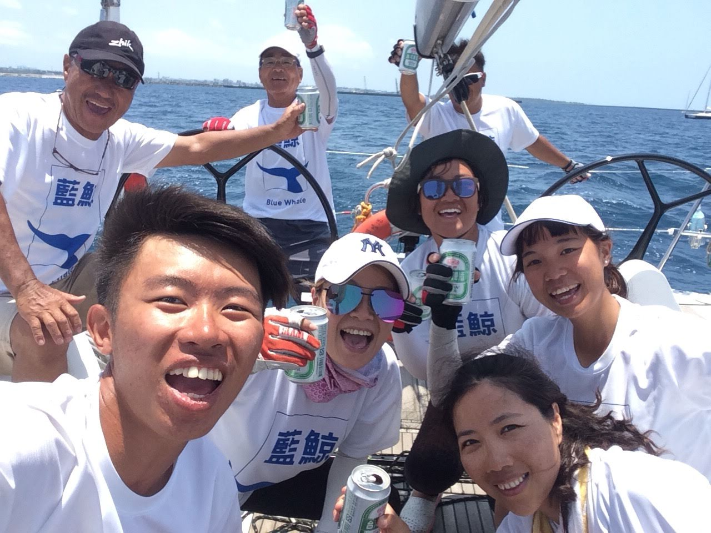

My College Life
2016
2015 Set 加入海洋大學帆船隊
這是
2016 jul-Set 中國無錫太湖，山水遊艇俱樂部，小孩OP夏令營教練


2016 Nov 第一次帆船長行，花蓮到墾丁後壁湖，歷時50小時
2017
2017 Mar 墾丁學習自由潛水，考自由潛水證照(AIDA2)
2017 Apr 法國籍研究帆船TARA停靠台灣基隆港，擔任導覽人員
2017 May 預計長航至澎湖，卻因為天氣惡劣，航程轉為基隆至淡水
2017 Jun 第三次長航，基隆至日本石垣島，歷時33小時
2017 Jul-Aug 日本石垣島潛店打工換宿，帶客人潛水

2017 Set 保養海大船隻，磨船底，上漆
2018
2018 Jan 奇萊南華


2018 May 台灣琉球國際帆船賽，基隆至日本宮古島，歷時32小時
